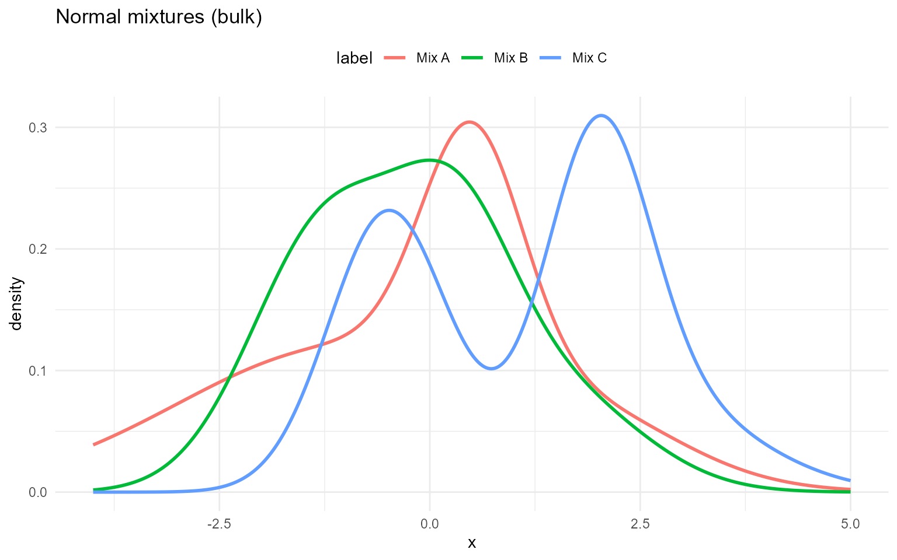

Normal
Normal mixture kernel
A normal component is parameterized by and :
A finite normal mixture with components has density
Parameter mapping (math
code):
mean[j],
sd[j],
w[j].
Normal mixture with GPD tail
In the spliced version, the bulk distribution is the normal mixture below , and a GPD tail is attached above . The tail parameters are and , applied to exceedances .
Tail mapping (math
code):
threshold,
tail_scale,
tail_shape.
Without GPD (mixture kernel)
grid <- seq(-4, 5, length.out = 400)
normal_sets <- list(
list(label = "Mix A", w = c(0.6, 0.3, 0.1), mean = c(-1, 0.5, 2), sd = c(2, 0.6, 1.1)),
list(label = "Mix B", w = c(0.5, 0.3, 0.2), mean = c(-1.2, 0.3, 1.5), sd = c(0.9, 0.7, 1.0)),
list(label = "Mix C", w = c(0.4, 0.35, 0.25), mean = c(-0.5, 2, 2.5), sd = c(0.7, 0.6, 1.2))
)
example <- normal_sets[[1]]
dNormMix(0, w = example$w, mean = example$mean, sd = example$sd)[1] 0.254
dNormMix(0, w = example$w, mean = example$mean, sd = example$sd, log = TRUE)[1] -1.37
pNormMix(0, w = example$w, mean = example$mean, sd = example$sd)[1] 0.479
pNormMix(0, w = example$w, mean = example$mean, sd = example$sd, lower.tail = FALSE)[1] 0.521
pNormMix(0, w = example$w, mean = example$mean, sd = example$sd, log.p = TRUE)[1] -0.736
q_vec(qNormMix, c(0.25, 0.5, 0.75), w = example$w, mean = example$mean,
sd = example$sd)[1] -1.4234 0.0805 0.9495
q_vec(qNormMix, c(0.25, 0.5, 0.75), w = example$w, mean = example$mean,
sd = example$sd, lower.tail = FALSE)[1] 0.9495 0.0805 -1.4234
q_vec(qNormMix, c(log(0.25), log(0.5), log(0.75)), w = example$w,
mean = example$mean, sd = example$sd, log.p = TRUE)[1] -1.4234 0.0805 0.9495
draw_many(rNormMix, list(w = example$w, mean = example$mean, sd = example$sd))[1] -1.652 1.081 2.456 -2.641 0.323
df_norm <- do.call(rbind, lapply(normal_sets, function(ps) {
data.frame(x = grid, density = density_curve(grid, dNormMix, list(w = ps$w, mean = ps$mean, sd = ps$sd)), label = ps$label)
}))
ggplot(df_norm, aes(x = x, y = density, color = label)) +
geom_line(linewidth = 1) +
labs(title = "Normal mixtures (bulk)", x = "x", y = "density") +
theme_minimal() + theme(legend.position = "top")
With GPD tail
Spliced density uses the same mixture for and attaches above with continuity. CDF combines mixture CDF up to and GPD exceedance beyond ; quantiles invert this spliced CDF; RNG draws bulk vs tail by the CDF mass at .
normal_gpd_sets <- list(
list(label = "Mix A", w = c(0.6, 0.4), mean = c(-1, 2), sd = c(0.5, 0.8), threshold = 1.8, tail_scale = 0.4, tail_shape = 0.25),
list(label = "Mix B", w = c(0.5, 0.5), mean = c(0, 1), sd = c(0.6, 0.6), threshold = 1.5, tail_scale = 0.3, tail_shape = 0.2),
list(label = "Mix C", w = c(0.7, 0.3), mean = c(0.5, 2.5), sd = c(0.4, 1.0), threshold = 2.0, tail_scale = 0.5, tail_shape = 0.15)
)
example <- normal_gpd_sets[[1]]
dNormMixGpd(2, w = example$w, mean = example$mean, sd = example$sd, threshold = example$threshold, tail_scale = example$tail_scale, tail_shape = example$tail_shape)[1] 0.332
pNormMixGpd(2, w = example$w, mean = example$mean, sd = example$sd, threshold = example$threshold, tail_scale = example$tail_scale, tail_shape = example$tail_shape)[1] 0.85
q_vec(qNormMixGpd, c(0.5, 0.9), w = example$w, mean = example$mean, sd = example$sd, threshold = example$threshold, tail_scale = example$tail_scale, tail_shape = example$tail_shape)[1] -0.517 2.190
draw_many(rNormMixGpd, example)[1] 3.924 3.365 1.082 -1.150 -0.874
df_norm_gpd <- do.call(rbind, lapply(normal_gpd_sets, function(ps) {
data.frame(x = grid, density = density_curve(grid, dNormMixGpd, list(w = ps$w, mean = ps$mean, sd = ps$sd, threshold = ps$threshold, tail_scale = ps$tail_scale, tail_shape = ps$tail_shape)), label = ps$label)
}))
ggplot(df_norm_gpd, aes(x = x, y = density, color = label)) +
geom_line(linewidth = 1) +
labs(title = "Normal mixtures with GPD tail (different thresholds)", x = "x", y = "density") +
theme_minimal() + theme(legend.position = "top")